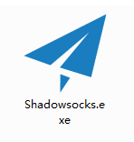
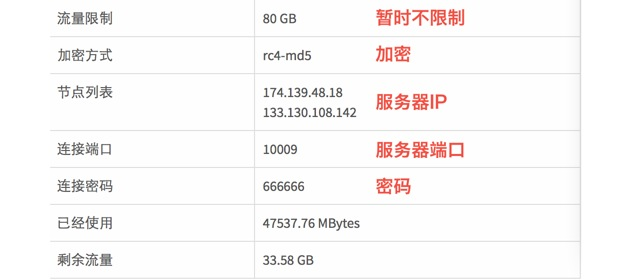
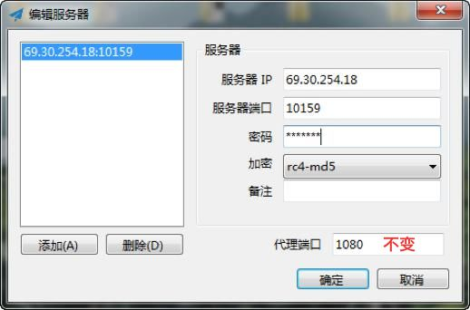
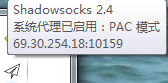
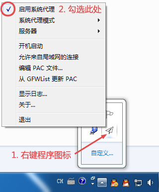
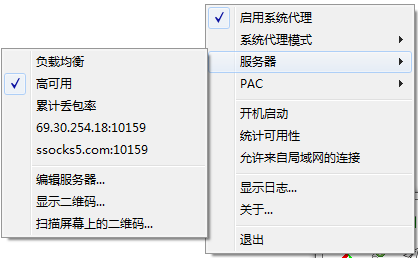
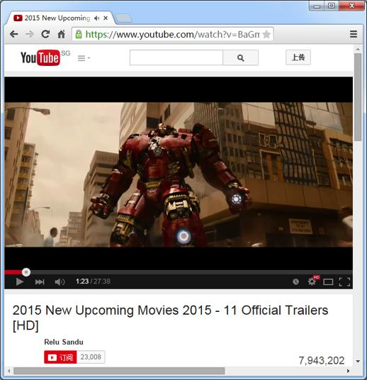

Windows设置使用
ShadowSocks教程
步骤1，下载ShadowSocks软件
百度网盘 Win7及以上点这里
|
WinXP点这里（需要先安装.NET Framework 3.5）
步骤2，解压到任意目录，运行其中的ShadowSocks.exe

步骤3，首次运行，会弹出编辑服务器窗口，按图示填写您的ShadowSocks服务器地址，端口，密码和加密方式，点确定


点确定后，会如下提示

步骤4：按提示右键程序图标，弹出菜单，勾选“启用系统代理”

步骤5：为了在多个服务器中选择一个最快最可靠的，勾选“高可用”

步骤6：设置好ShadowSocks后，IE/Chrome/Firefox无需设置（无需使用第三方代理插件），直接打开网址即可

问：PAC模式和全局模式有什么区别？
答：PAC模式直接访问大陆网站，全局模式访问所有网站都加密后通过服务器传输。
问：负载均衡和高可用分别是什么意思？
答：负载均衡模式会随机选择已有的服务器；高可用模式会根据延迟和丢包率自动选择已有的服务器。
问：累计丢包率模式是什么意思？
答：通过定时 ping 服务器IP监控服务器状态，选择过去总丢包率最少的（需要先勾选“统计可用性”）。
问：遇到端口号冲突怎么办？
答：请把默认本地端口号1080修改为其它数字（1~65535），越大越不容易冲突。